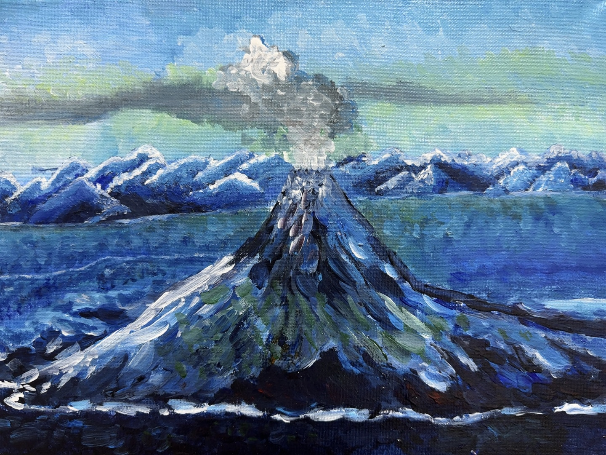
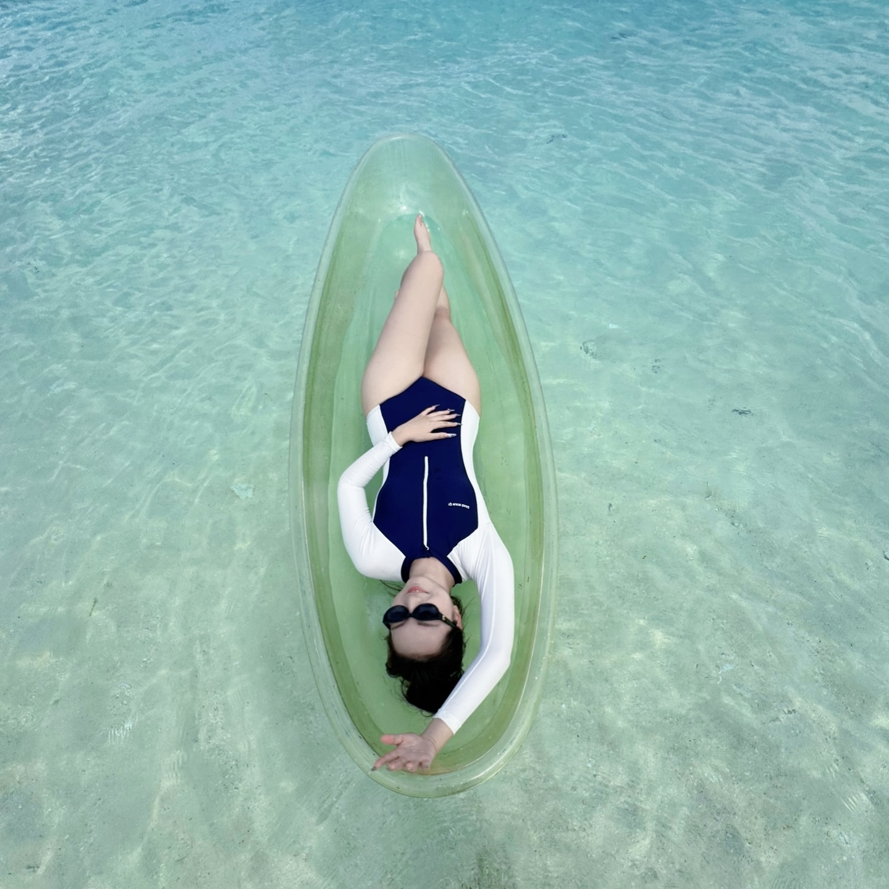

Music & Performing Arts
音乐 & 表演艺术：Erhu, Guitar, Latin Dance
二胡、吉他、拉丁舞
Sports & Outdoor Activities
体育&户外活动：: Skateboarding, Swimming, Basketball, Badminton
滑板、游泳、篮球、羽毛球

Art & Creativity
艺术与创意：: Acrylic painting, Pen calligraphy
丙烯画、钢笔书法
Others
其他：Tarot Reading
塔罗牌占卜

Personal Interests
个人爱好：I also enjoy going to the beach, eating delicious food, and taking beautiful photos. And most of all, I appreciate being around people who are kind to me.
我还喜欢去海边、吃好吃的美食、拍好看的照片，也喜欢那些对我好的人。